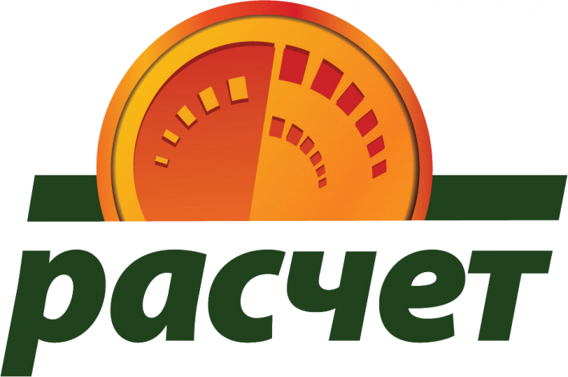

<section class="full-width_section_light">
  <mat-card class="card-big">
    <mat-card-header style=" ">
      <mat-card-title>
        Условия оплаты
      </mat-card-title>
    </mat-card-header>
    
    <mat-card-content>

      <div class="col-xs-12 ">
        <p>
          <b>Инструкция:</b>
        </p>
      </div>
      <div class="col-xs-12 ">
        <p>
          <b>1.</b> Для оформления заявки на участие в системе SkillsCub™ необходимо нажать «Подать заявку» на главной странице сайта, заполнить все поля формы и нажать «Отправить». Внимание! Оставляя заявку на сайте, Вы принимаете условия <a class="decorated-link" href="/License">пользовательского соглашения</a>.
        </p>
      </div>
      <div class="col-xs-12 ">
        <p>
          <b>2.</b> В течение одного рабочего дня  Вам на почту придет подтверждение о получении заявки и номер счета для оплаты.
        </p>
      </div>
      <div class="col-xs-12 ">
        <p>
          <b>3.</b> Оплатить услуги SkillsCub™ Вы можете через систему ”Расчет“ (ЕРИП) в течение 5 (пяти) дней, в удобное для Вас время, в удобном для Вас пункте банковского обслуживания:.
        </p>
        <ul>
          <li>интернет-банке,</li>
          <li>с помощью мобильного банкинга,</li>
          <li>инфокиоске,</li>
          <li>кассе банков,</li>
          <li>банкомате.</li>
        </ul>
        <p>
          Совершить оплату можно с использованием наличных денежных средств, электронных денег и банковских платежных карточек, в пунктах банковского обслуживания  банков, которые оказывают услуги по приему платежей, а также посредством инструментов дистанционного банковского обслуживания.
        </p>
        <h3>
          ДЛЯ ПРОВЕДЕНИЯ ПЛАТЕЖА НЕОБХОДИМО:
        </h3>
        <p>1. Выбрать</p>
        <ul>
          <li>Пункт “Система “Расчет” (ЕРИП)</li>
          <li>г. Минск</li>
          <li>Образование и развитие</li>
          <li>Дополнительное образование и развитие</li>
          <li>Тренинги, семинары, консультации</li>
          <li>ИП Щуровская В.Ф. — SkillsCub</li>
        </ul>
        <p>2. Для оплаты ввести Номер заказа</p>
        <p>3. Проверить корректность информации</p>
        <p>4. Совершить платеж.</p>

        <p><b>Если Вы осуществляете платеж в кассе банка, пожалуйста, сообщите кассиру о необходимости проведения платежа через систему ”Расчет“ (ЕРИП).</b></p>

        <p>
          <b>
            Вы также можете оплатить обучение по коду услуги в ЕРИП:
          </b>
        </p>
        <ul>
          <li>Пункт “Система “Расчет” (ЕРИП)</li>
          <li> Оплата в ЕРИП по коду услуги</li>
          <li> Вводите код 4452351</li>
          <li> Стоимость полного пакета по одной профессии составляет 50 (пятьдесят) белорусских рублей.</li>
        </ul>
        <p>
          Стоимость полного пакета по одной профессии составляет <b>50 (пятьдесят) белорусских рублей</b>.
        </p>
      </div>
      <div class="col-xs-12 ">
        <p>
          <b>4.</b> В течение суток после оплаты Вам придет анкета и дата консультации. Заполнить анкету необходимо в течение 3 (трех) дней с момента получения.
        </p>
        <p>Заявки принимаются круглосуточно.</p>
        <p>Справки по телефону:</p>
        <p>
          <a href="tel:+375259187062">
            +375 (25) 918-70-62
          </a> c <b>10:00</b> до <b>18:00</b>
        </p>
      </div>

    </mat-card-content>
  </mat-card>
</section>
